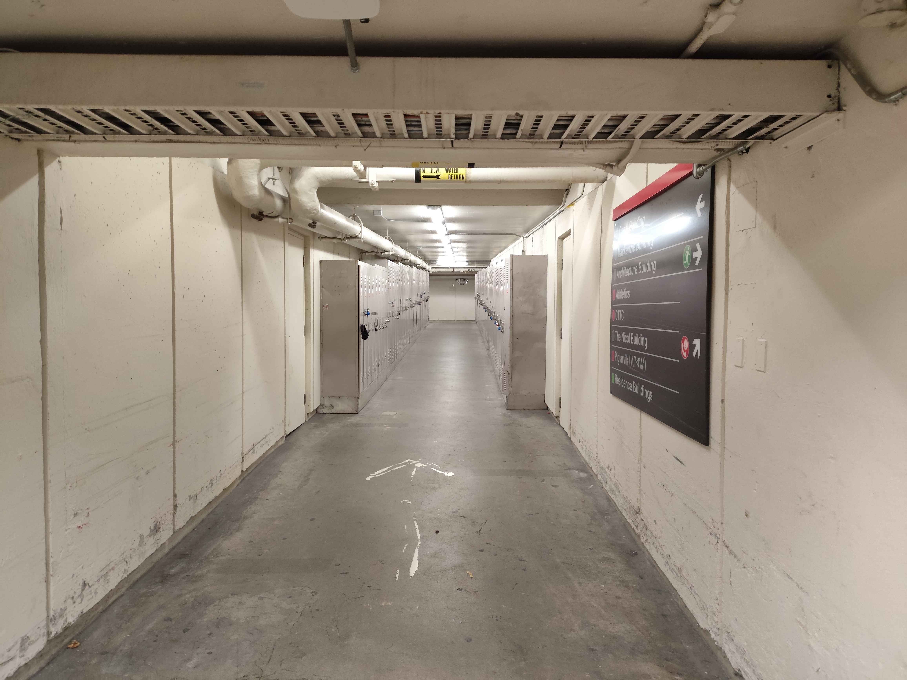

In what colleagues are calling an unprecedented leap in computational theory, Professor Thomas Ellsworth of the Department of Computer Science has unveiled what he refers to only as “super secret technology.”
While details remain intentionally obscured, Virek claims the system is capable of redefining digital architecture and secure computation at a foundational level. Rather than patenting the discovery or selling it privately, he has taken an unusual approach.
“I don’t want gatekeepers,” Virek stated during a small faculty symposium. “If someone can think deeply enough to solve the puzzles I’ve left behind, they deserve access. Not institutions. Not agencies. Individuals.”
He has embedded clues within academic papers, lectures, and personal writings. According to the professor, the complete sequence will unlock both the code and a “personal reserve” intended to fund independent innovation.
When asked why he would risk such openness, Virek smiled. “Because brilliance should be pursued, not monitored.”
Here, the next puzzle lies within this hiding spot.